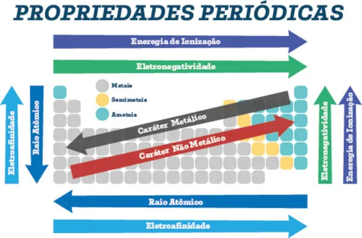

https://www.manualdaquimica.com/quimica-geral/propriedades-periodicas.htm
Propriedades Periódicas
As propriedades periódicas são características dos elementos químicos que apresentam padrões de variação conforme avançamos pela Tabela Periódica. Elas ajudam a explicar por que certos átomos são maiores, por que alguns perdem elétrons com facilidade e por que outros atraem elétrons com maior intensidade durante uma ligação química.
1. Por que as propriedades variam?
As propriedades periódicas estão relacionadas principalmente à estrutura eletrônica dos átomos, à quantidade de camadas eletrônicas e à atração exercida pelo núcleo sobre os elétrons.
O núcleo possui prótons de carga positiva, enquanto os elétrons possuem carga negativa. A atração entre essas cargas influencia o tamanho do átomo e a facilidade com que ele perde ou recebe elétrons.
Dois conceitos ajudam a compreender essas variações:
- Camadas eletrônicas: regiões de energia ocupadas pelos elétrons. Quando um átomo possui mais camadas, seus elétrons mais externos geralmente ficam mais distantes do núcleo.
- Carga nuclear efetiva: atração resultante que os elétrons mais externos sentem do núcleo, considerando também o efeito de blindagem provocado pelos elétrons internos.
Ao percorrer um período da esquerda para a direita, o número de prótons aumenta. Em geral, a atração sobre os elétrons externos também aumenta, pois a blindagem não cresce na mesma proporção. Isso influencia várias propriedades periódicas.
2. Raio atômico
O raio atômico é uma medida utilizada para comparar o tamanho dos átomos. Como a nuvem eletrônica não possui uma fronteira perfeitamente definida, seu valor depende do método utilizado para medi-lo.
Variação na Tabela Periódica
- De cima para baixo em um grupo: o raio atômico geralmente aumenta, pois novas camadas eletrônicas são adicionadas.
- Da esquerda para a direita em um período: o raio atômico geralmente diminui, porque a atração nuclear efetiva aumenta e aproxima os elétrons do núcleo.
Assim, a tendência geral de aumento do raio atômico aponta para o canto inferior esquerdo da Tabela Periódica.
Exemplo: o potássio (K) possui maior raio atômico que o sódio (Na), pois está abaixo dele no mesmo grupo. Já em um período, o sódio geralmente possui raio maior que o cloro (Cl).
3. Raio iônico
O raio iônico corresponde ao tamanho de um íon, isto é, de um átomo ou grupo de átomos que ganhou ou perdeu elétrons.
- Cátion: forma-se quando um átomo perde elétrons. Em geral, o cátion é menor que o átomo neutro correspondente.
- Ânion: forma-se quando um átomo ganha elétrons. Em geral, o ânion é maior que o átomo neutro correspondente.
Isso acontece porque a perda de elétrons reduz a repulsão entre eles e pode eliminar uma camada eletrônica. O ganho de elétrons aumenta a repulsão eletrônica na camada ocupada.
Exemplo: Na⁺ é menor que Na, enquanto Cl⁻ é maior que Cl.
Também é possível comparar espécies isoeletrônicas, que possuem o mesmo número de elétrons. Nesse caso, entre espécies com a mesma quantidade de elétrons, aquela com mais prótons tende a apresentar menor raio, pois seu núcleo exerce maior atração.
4. Energia de ionização
A energia de ionização é a energia necessária para retirar um elétron de um átomo isolado no estado gasoso. Na primeira ionização, o átomo neutro perde um elétron e forma um cátion:
X(g) + energia → X⁺(g) + e⁻
Quanto mais fortemente o elétron estiver atraído pelo núcleo, maior será a energia necessária para removê-lo.
Variação na Tabela Periódica
- De cima para baixo em um grupo: a energia de ionização geralmente diminui, pois o elétron externo fica mais distante do núcleo e sofre maior blindagem.
- Da esquerda para a direita em um período: a energia de ionização geralmente aumenta, devido ao aumento da atração nuclear efetiva.
Portanto, a tendência geral de aumento da energia de ionização aponta para o canto superior direito da tabela, com algumas exceções. Os gases nobres costumam apresentar valores elevados, enquanto os metais alcalinos apresentam valores baixos em seus períodos.
Exemplo: em condições comparáveis, é mais fácil retirar um elétron do sódio (Na) do que do neônio (Ne).
Importante: retirar elétrons sucessivamente de um mesmo átomo ou íon exige cada vez mais energia. Após a retirada dos elétrons da camada de valência, pode ocorrer um grande salto na energia necessária para remover um elétron de uma camada interna.
5. Afinidade eletrônica
A afinidade eletrônica está relacionada à variação de energia quando um átomo isolado no estado gasoso recebe um elétron. Esse processo pode liberar ou exigir energia, dependendo do elemento e da situação.
Representação simplificada:
X(g) + e⁻ → X⁻(g)
Em muitos casos, receber um elétron libera energia, mas isso não acontece com a mesma intensidade para todos os elementos. A afinidade eletrônica apresenta tendências gerais na tabela, porém possui exceções importantes.
- Ao longo de um período, muitos elementos tendem a receber elétrons de maneira mais favorável em direção aos halogênios.
- Descendo um grupo, a atração pelo elétron adicional geralmente diminui, embora existam exceções.
- Os gases nobres normalmente não recebem elétrons com facilidade, pois suas configurações eletrônicas já são bastante estáveis.
Atenção: algumas fontes expressam a afinidade eletrônica como energia liberada, enquanto outras utilizam a variação de energia do processo. Por isso, o sinal numérico pode mudar conforme a convenção adotada. É mais seguro observar se a adição do elétron libera ou exige energia.
6. Eletronegatividade
A eletronegatividade é a capacidade que um átomo apresenta de atrair para si os elétrons compartilhados em uma ligação química.
Ela é especialmente útil para compreender ligações covalentes e a distribuição dos elétrons entre átomos diferentes.
Variação na Tabela Periódica
- Da esquerda para a direita em um período: a eletronegatividade geralmente aumenta.
- De baixo para cima em um grupo: a eletronegatividade geralmente aumenta.
Assim, sua tendência geral de aumento aponta para o canto superior direito da tabela. O flúor (F) é o elemento mais eletronegativo na escala de Pauling.
Exemplo: na molécula de HCl, o cloro atrai mais intensamente os elétrons compartilhados do que o hidrogênio, pois é mais eletronegativo.
Importante: a eletronegatividade descreve a atração pelos elétrons de uma ligação. Ela não é exatamente a mesma coisa que afinidade eletrônica, que está relacionada à mudança de energia quando um átomo isolado recebe um elétron.
7. Eletropositividade e caráter metálico
O caráter metálico descreve a tendência de um elemento apresentar propriedades típicas dos metais, incluindo a facilidade relativa de perder elétrons e formar cátions. A eletropositividade é um termo associado à tendência de ceder elétrons.
Em termos gerais:
- O caráter metálico aumenta ao descer em um grupo.
- O caráter metálico aumenta em direção à esquerda de um período.
- Os metais alcalinos apresentam grande facilidade para perder o elétron mais externo.
Por isso, o caráter metálico apresenta uma tendência geral de aumento em direção ao canto inferior esquerdo da Tabela Periódica.
Exemplo: o potássio (K) tende a perder seu elétron de valência com mais facilidade que o flúor (F), que tende a atrair elétrons em ligações e pode ganhar um elétron para formar F⁻.
8. Resumo das tendências periódicas
| Propriedade | Ao descer um grupo | Da esquerda para a direita |
|---|---|---|
| Raio atômico | Geralmente aumenta | Geralmente diminui |
| Energia de ionização | Geralmente diminui | Geralmente aumenta |
| Eletronegatividade | Geralmente diminui | Geralmente aumenta |
| Caráter metálico | Geralmente aumenta | Geralmente diminui |
| Afinidade eletrônica | Apresenta tendência geral menos favorável | Em muitos casos, torna-se mais favorável |
As setas indicam tendências gerais, não regras absolutas. A afinidade eletrônica, em particular, apresenta variações e exceções que dificultam resumir todos os elementos com uma única seta.
9. Como resolver exercícios de tendências periódicas
Antes de comparar dois elementos, localize-os na Tabela Periódica e identifique se estão no mesmo grupo ou no mesmo período.
Exemplo 1 — Qual possui maior raio atômico: Li ou K?
O lítio (Li) e o potássio (K) pertencem ao mesmo grupo. Como o potássio está mais abaixo, possui mais camadas eletrônicas.
Resposta: K possui maior raio atômico.
Exemplo 2 — Qual possui maior energia de ionização: Na ou Cl?
Os dois elementos estão no terceiro período. A energia de ionização geralmente aumenta da esquerda para a direita.
Resposta: Cl apresenta maior primeira energia de ionização.
Exemplo 3 — Qual é mais eletronegativo: O ou S?
Oxigênio (O) e enxofre (S) pertencem ao mesmo grupo. O oxigênio está acima do enxofre.
Resposta: O é mais eletronegativo.
Exemplo 4 — Qual apresenta maior caráter metálico: Na ou Mg?
Os dois elementos pertencem ao terceiro período. O caráter metálico geralmente diminui da esquerda para a direita.
Resposta: Na apresenta maior caráter metálico.
10. Erros comuns
- Confundir raio atômico com energia de ionização: em tendências gerais, quando o raio aumenta, a energia de ionização tende a diminuir.
- Achar que todas as propriedades aumentam na mesma direção: cada propriedade possui seu próprio comportamento.
- Tratar as tendências como regras sem exceção: os valores reais podem apresentar irregularidades.
- Confundir eletronegatividade com afinidade eletrônica: a primeira descreve a atração por elétrons compartilhados em uma ligação; a segunda está relacionada à energia envolvida na adição de um elétron a um átomo isolado.
- Comparar íons como se fossem átomos neutros: ganhar ou perder elétrons altera o raio, então é necessário observar a carga das espécies.
11. Resumo final
- O raio atômico geralmente aumenta para baixo e para a esquerda.
- A energia de ionização geralmente aumenta para cima e para a direita.
- A eletronegatividade geralmente aumenta para cima e para a direita, sendo o flúor o elemento mais eletronegativo.
- O caráter metálico geralmente aumenta para baixo e para a esquerda.
- A afinidade eletrônica depende da energia envolvida no recebimento de um elétron e apresenta exceções importantes.
- As tendências periódicas ajudam a prever o comportamento químico, mas devem ser interpretadas como padrões gerais.
Próximo assunto recomendado
Agora que você conhece as tendências periódicas, avance para Ligações Químicas, estudando como os átomos utilizam, compartilham ou transferem elétrons para formar substâncias.
O conteúdo dessa página foi gerado por IA pois a Moderna PLUS não se aprofunda aos conceitos de base.
Fontes consultadas
- Brasil Escola — Propriedades periódicas e aperiódicas https://brasilescola.uol.com.br/quimica/propriedades-periodicas-aperiodicas.htm
- Brasil Escola — Propriedades periódicas https://brasilescola.uol.com.br/quimica/propriedades-periodicas.htm
- Brasil Escola — Raio atômico https://brasilescola.uol.com.br/quimica/raio-atomico.htm
- OpenStax — Chemistry 2e, seção 6.5: Periodic Variations in Element Properties https://openstax.org/books/chemistry-2e/pages/6-5-periodic-variations-in-element-properties